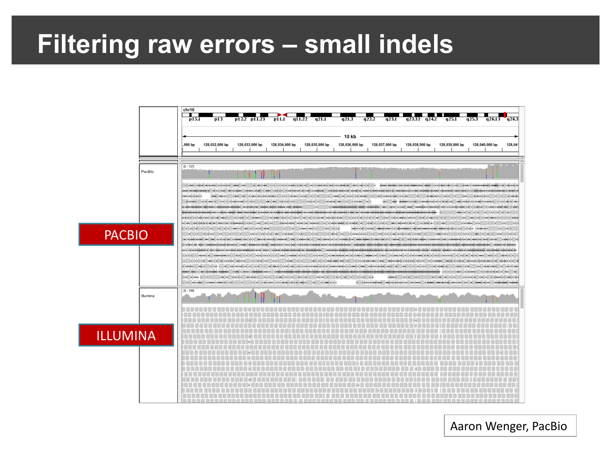
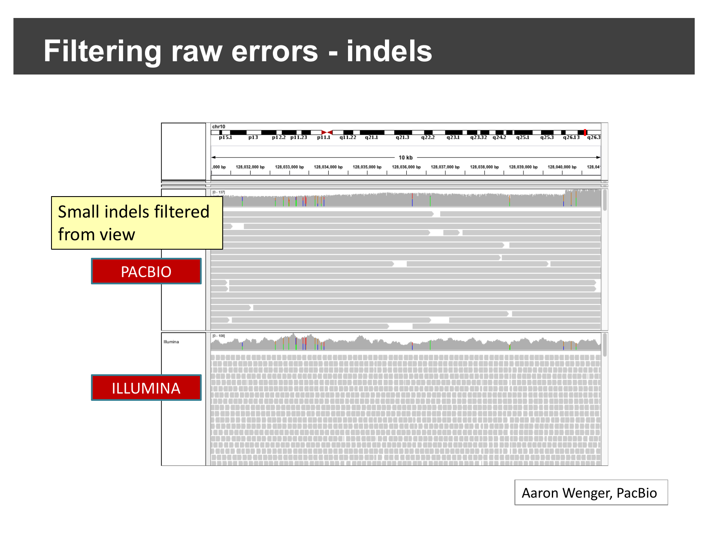
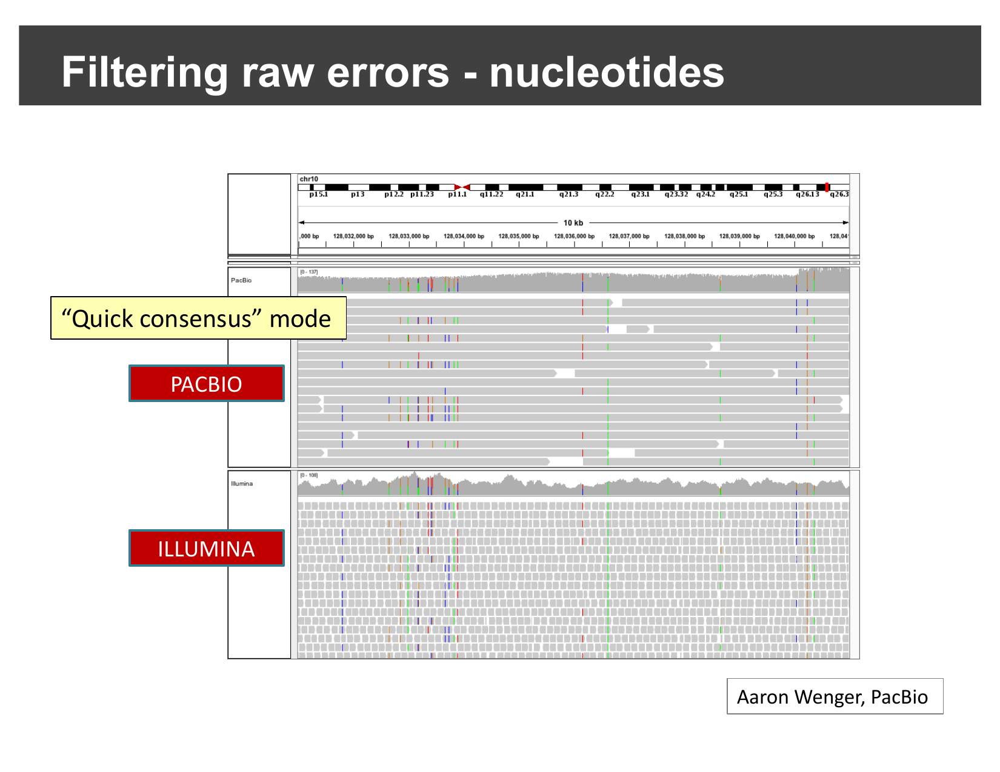
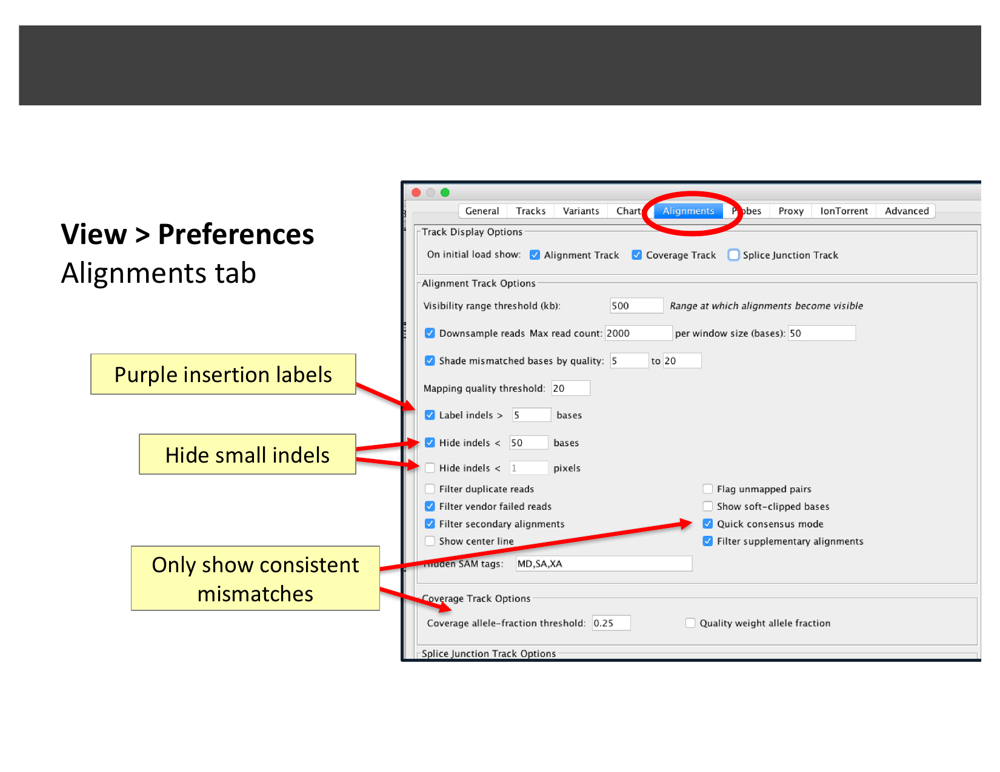
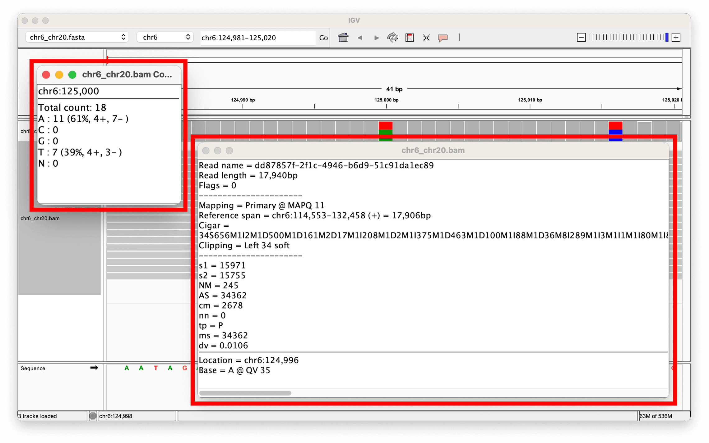
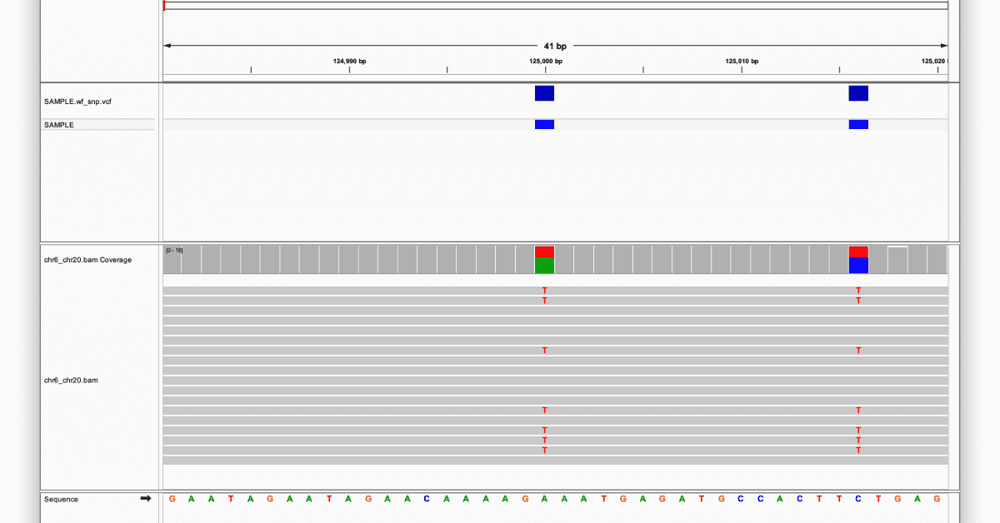
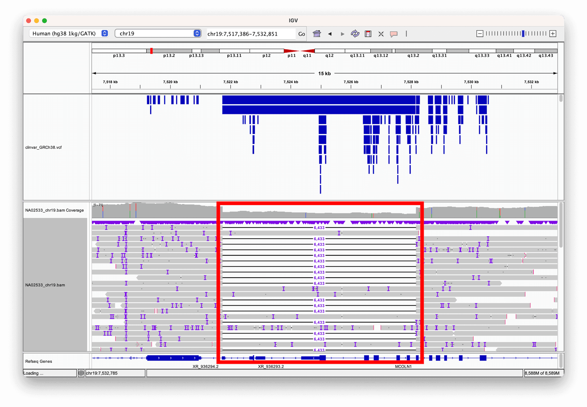
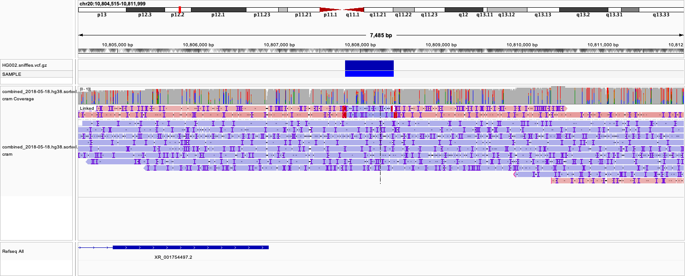
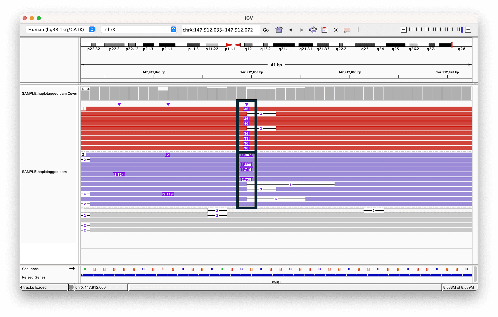

All Images
Introduction to IGV
Figure 1

Four common IGV use cases: epigenomics signal
tracks, NGS read alignments, RNA-seq coverage and junctions, and
population variants and genotypes.
Figure 2

A partial list of file formats supported
natively by IGV, including BAM, BED, bigWig, FASTA, GFF/GTF, VCF, and
more.
IGV Basics
Figure 1

The full list of genomes IGV hosts, opened via
“More…” in the genome drop-down menu.
Figure 2

Loading the “UI Basics” tutorial dataset from
the IGV server.
Figure 3

Zooming from the whole genome to chromosome 1:
the ruler now shows a cytoband ideogram.
Figure 4

Click-and-drag on the ruler to zoom into a
region; double-click a track to zoom to a point of interest.
Figure 5

Base-pair resolution view showing the sequence
track, and optional 3-frame amino acid translation.
Figure 6

Selecting Tools > Combine Data Tracks with
four loaded ChIP-seq signal tracks.
Figure 7

The Combine Data Tracks dialog: pick two tracks,
an operation, and a name for the result.
Figure 8

A new “Sum” track (Track A + Track B) added
below the two source tracks.
Loading Your Own Genome
Figure 1

Loading a genome from a local FASTA file via the
Genomes menu.
Viewing Alignments and SNPs
Figure 1

Single-end vs. paired-end reads, and the
relationship between read length, inner distance, and insert size.
Figure 2

An example SAM file: a header describing the
reference, followed by one alignment record per line, with columns for
read name, position, mapping quality, CIGAR string, mate info, and
sequence.
Figure 3

Loading the SNP BED file and BAM alignment
track, then navigating to a named candidate SNP locus.
Figure 4

Sorting reads by base and inspecting allele
counts in the coverage track.
Figure 5

Reads sorted and colored by strand: an even
split between the two colors is expected for a non-strand-specific
library.
Figure 6

An unusually narrow coverage spike — worth
checking whether it is a unique alignment or a mapping artifact.
Figure 7

Right-click a read and select “Blat read
sequence” from the alignment track’s context menu.
Figure 8

BLAT results for one read: many alternative
alignments across different chromosomes with similar scores.
Precomputing Coverage with igvtools
Figure 1

No coverage is shown at low zoom levels until it
has been precomputed.
Figure 2

Associating the newly created TDF file with the
coverage track, revealing three spikes of coverage.
Viewing RNA-seq Data
Figure 1

Pre-mRNA is spliced into mRNA by removing
introns and joining exons; short sequencing reads are then generated
from this exon-only mRNA.
Figure 2

The same splicing diagram, now showing how a
read spanning an exon-exon boundary appears as a gapped, split alignment
when mapped back onto the genomic sequence in IGV.
Figure 3

Enabling the splice junction track in
preferences, then loading the RNA-Seq (Body Map) tutorial dataset.
Figure 4

Navigating to SLC25A3 and viewing separate
coverage and junction tracks per tissue; squishing the gene track
reveals multiple isoforms.
Figure 5

Comparing the alternative splicing pattern
between tissues, then opening a Sashimi plot from the right-click
menu.
Figure 6

The resulting Sashimi plot: arcs represent reads
spanning exon junctions, and peaks represent exon coverage, for two
tissues.
Viewing Variants and Genotypes
Figure 1

The example dataset: variant calls on chromosome
22 for roughly 850 people from populations around the world.
Figure 2

Background on the APOL1 variant explored later
in this episode: it is found almost exclusively on African chromosomes
and is strongly associated with kidney disease.
Figure 3

A loaded VCF session showing the variant sites
panel, per-sample genotypes panel, and sample information color
bar.
Figure 4

Zoomed-in variant sites: blue squares are the
reference allele, red squares are the alternate allele.
Figure 5

Zoomed-in genotypes: cyan for homozygous
alternate, blue for heterozygous, grey for homozygous reference.
Figure 6

An example sample-information file: one row per
sample, with a
sample column matching the VCF’s sample
names and additional metadata columns.Figure 7

Grouping genotype rows by the “super_pop” sample
attribute to compare population groups.
Viewing Structural Variants
Figure 1

A read pair’s insert size (measured on the
original fragment) versus its inferred insert size (measured after
aligning both mates back to the reference).
Figure 2

Pairs with a larger-than-expected inferred
insert size are colored red.
Figure 3

A real deletion: red discordant pairs and a
coverage drop at both breakpoints (NA12878, chr3, split-screen
view).
Figure 4

Each read is colored by the chromosome its mate
aligns to; IGV assigns a fixed color per chromosome.
Figure 5

A real inter-chromosomal fusion: reads near a
chr1/chr6 breakpoint colored by their mate’s chromosome, visible only in
the tumor sample.
Figure 6

At an inversion’s two breakpoints,
discordantly-oriented pairs are colored to stand out from
normally-oriented (grey) pairs.
Figure 7

A real inversion in the APP gene:
discordantly-oriented reads and a coverage drop at both
breakpoints.
Figure 8

Right-click the alignments and select “View as
pairs”.
Figure 9

The resulting view: a cluster of
discordantly-oriented reads confirms an inversion breakpoint.
Viewing Long-Read Sequencing Data
Figure 1

The same locus sequenced with PacBio (long
reads, top) and Illumina (short reads, bottom). The PacBio track is
dense with small colored mismatch/indel marks — raw single-read errors —
that the Illumina track does not show.
Figure 2

The same PacBio track with small indels hidden:
the reads now look much closer to the clean Illumina track above
it.
Figure 3

Quick consensus mode applied to
single-nucleotide mismatches: only consistent, likely-real mismatches
remain visible.
Figure 4

The Alignments tab of IGV’s Preferences dialog:
indel labeling/hiding thresholds and Quick consensus mode.
Figure 5

A single long read’s details: read length ~17.9
kb, MAPQ 11, and a CIGAR string full of insertion/deletion operations —
typical of nanopore’s higher per-base error rate.
Figure 6

The variant sites and coverage track for the
same locus: two heterozygous SNVs (red-highlighted), each recorded in
the accompanying VCF.
Figure 7

A 6 kb deletion, directly visible as reads whose
alignment is interrupted then resumes past the deleted region; a ClinVar
track (blue bars) shows this variant is already clinically
annotated.
Figure 8

Ultra-long nanopore reads at
chr20:10,804,515-10,811,999 (HG002), linked and colored by read strand:
a block of reads switches from pink (forward) to purple (reverse) and
back, right where the linked lines connect split read segments.
Figure 9

Reads colored and grouped by haplotype (HP) tag:
one haplotype (top) carries a small insertion, the other (bottom) a much
larger one, at a repeat expansion in FMR1.